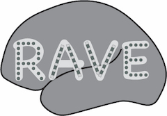

R Analysis and Visualization of intracranial Electroencephalography
RAVE runs on Mac, Windows or Linux. Click here for the prerequisite installation guide to install the latest versions of all required tools. RAVE requires the latest versions of the language “R” and “RStudio” and trying to install RAVE on older versions will lead to unpredictable error messages. Click here for suggested system configurations.
After the prerequisites are installed, open R-Studio (in Mac OSX, Rstudio icon is installed in your Applications folder). Copy and paste the following commands into the RStudio console to download the current version of RAVE. The commands must be typed one at a time. If packages need to be installed, you may accept the defaults by typing “Yes” to any questions that appear. In the case of errors, relaunch RStudio and repeat the commands or try the alternative installation command.
install.packages('devtools')
devtools::install_github('dipterix/threeBrain')
devtools::install_github('dipterix/rutabaga')
devtools::install_github('beauchamplab/ravebuiltins@dev')
devtools::install_github('beauchamplab/rave')
threeBrain::download_N27(make_default = TRUE)
rave::arrange_modules(TRUE, TRUE)Alternative installation command:
install.packages('pak')
pak::pkg_install('dipterix/threeBrain')
pak::pkg_install('dipterix/rutabaga')
pak::pkg_install('beauchamplab/ravebuiltins@dev')
pak::pkg_install('beauchamplab/rave')
threeBrain::download_N27(make_default = TRUE)
rave::arrange_modules(TRUE, TRUE)To update existing installations of RAVE. Make sure to update “R” and “RStudio” (see first step, above):
devtools::install_github('beauchamplab/ravebuiltins@dev')
devtools::install_github('beauchamplab/rave')
devtools::install_github('dipterix/threeBrain')
threeBrain::download_N27(make_default = TRUE)# 500MB ~ 1.5 GB per subject
rave::download_sample_data('KC')
rave::download_sample_data('YAB')
rave::download_sample_data('YAD')
rave::download_sample_data('YAF')
rave::download_sample_data('YAH')
rave::download_sample_data('YAI')
rave::download_sample_data('YAJ')
rave::download_sample_data('YAK')
# download group analysis sample - 72 MB. Please download at least 1 subject above.
rave::download_sample_data('_group_data')Once you see the following message, the subject is downloaded. The directory (XXX) will vary depending on the machine. If a subject previously exists, RAVE will ask you to choose from replacing, creating new or abandon the downloaded subject.
[ INFO ]: Expanding zip file
[ INFO ]: Copy from tempdir to data repository
[ INFO ]: Clean up
[ INFO ]: Done. Subject [sub1] is now at
[Raw Data]: /XXX/rave_data/raw_dir/KC
[RAVE Data]: /XXX/rave_data/data_dir/demo/KC